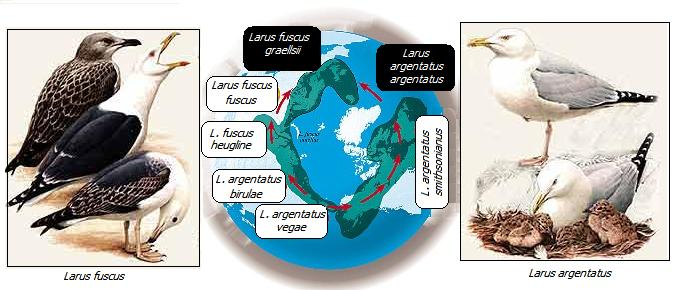
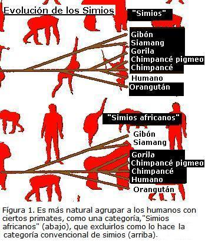
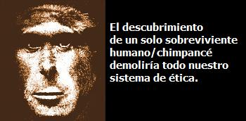

La mayoría de las personas tienen la certeza que los humanos son más importantes que los simios. Pero esa presunción tiene que ver más con una doble creación de estándares que con la biología.
Señor, usted está pidiendo dinero para salvar los gorilas. Muy loable sin duda. Pero no parece habérsele ocurrido que hay miles de bebes humanos sufriendo en el mismo continente, el africano. Habrá tiempo suficiente para preocuparnos de los gorilas cuando hallamos cuidado hasta el último de esos niños. ¡Escojamos las prioridades correctas por favor!
Esta carta hipotética podría haber sido escrita prácticamente por cualquier persona bien intencionada hoy en día. Al satirizarla, no quiero decir que no sería una buena idea dar a los niños la prioridad que espero que tengan, y también sería una buena idea hacerlo de otra manera. Solo estoy intentando mostrar la naturaleza irracional y automática de la doble creación de estándares para las especies. Para muchas personas es simplemente evidente por sí mismo que los humanos somos merecedores de un trato especial.
Para volver esto más evidente, considere la siguiente variación de la misma carta:
Señor, usted está pidiendo dinero para salvar los gorilas. Muy loable sin duda. Pero no parece habérsele ocurrido que hay miles de puercos hormigueros sufriendo en el mismo continente, el africano. Habrá tiempo suficiente para preocuparnos de los gorilas cuando hallamos cuidado hasta el último de esos puercos hormigueros. Escojamos las prioridades correctas por favor!
Esta segunda carta no evitará que se haga la pregunta: “¿Qué hay tan especial en los cerdos hormigueros?” Una buena pregunta, que exigirá una respuesta satisfactoria antes de tomarnos la carta en serio. Aún así, sugiero, que la primera carta no haría a la mayoría de las personas a hacerse la pregunta equivalente: “¿Qué hay de especial con los humanos?” Como decía, no niego que esta pregunta, a diferencia de la de los cerdos hormigueros, tuviese una respuesta poderosa. Solo estoy criticando la suposición no pensada de que en el caso de los humanos la pregunta no ha surgido.

La presunción especiecista que se aprecia aquí es muy simple. Los humanos son humanos y los gorilas son animales. Se ha abierto un abismo indiscutiblemente tan grande entre ellos que la vida de un único bebe humano vale más que la vida de todos los gorilas del mundo. El valor de la vida de un animal es apenas el costo de sustitución de substitución para su propietario - o en el caso de una especie rara, para la humanidad. Pero coloque el mismo rótulo de Homo sapiens a un minúsculo pedazo, insensible de tejido embrionario, y su vida súbitamente salta a un valor infinitamente incalculable.
Esa manera de pensar caracteriza lo que quiero denominar mente discontinua. Todos concordaríamos que una mujer de 1,83 m de altura es alta, y que una mujer de 1,52 no. Palabras como “alta” y “baja” nos tienden a forzar el mundo en clases cualitativas, pero eso no significa que el mundo realmente está distribuido discontinuamente. Si usted me diese una mujer de 1,75 m de altura y se me pidiese decidir si ella debería ser llamada alta o no, yo encogería los hombros y diría: “si ella tiene 1,75 m eso ya no te dice lo que necesitas saber?” Pero una mente discontinua, para caricaturizar un poco, iría al tribunal (probablemente a un costo muy alto) para decidir si la mujer es alta o baja. De hecho, casi no es necesario decir caricatura. Por muchos años, los tribunales de África del sur han tenido un duro trabajo juzgando si individuos en particular, de ascendencia mixta, deben considerarse como blancos, negros o morenos.
La mente discontinua está en todas partes. Esta es especialmente influyente cuando concierne a los abogados y los religiosos (todos los jueces no solamente son abogados, también lo son una gran proporción de los políticos, y todos los políticos tienen que conquistar los votos de los religiosos). Recientemente, después de dar una conferencia pública, fui cuestionado por un abogado en la audiencia. El dirigió todo el peso de argucia legal confrontando un punto interesante de la evolución. Si la especie A evolucionó hasta la especie posterior B, el argumentó, debe haber un punto en que la madre pertenece a la especie A y el hijo pertenece a la nueva especie B. Los miembros de especies diferentes no se pueden cruzar. Entonces te propongo, prosiguió él, que un hijo difícilmente sería tan diferente de sus padres al punto de no poderse cruzar con los de su especie. Así, él concluyó triunfalmente, eso no es una falla fatal en la teoría de la evolución?
Un anillo alrededor del mundo
Somos nosotros los que dividimos los animales en especies discontinuas. De acuerdo con el punto de vista evolutivo de la vida, tienen que haber intermediarios, sin embargo, de forma conveniente para nuestros rituales de nomenclatura, ellos están generalmente extintos: generalmente más no siempre. El abogado quedaría sorprendido, y espero, intrigado por las así llamadas especies anillo.
El caso más conocido es la gaviota argentea (o gaviota plateada Larus argentatus) versus la gaviota de lomo oscuro (Larus fuscus). En la Gran Bretaña estas son especies claramente distintas, muy diferentes en color. Cualquiera puede diferenciarlas. Pero si usted sigue la población de gaviotas argenteas por el occidente alrededor del hemisferio norte hasta América del Norte, y entrando por Alaska a través de Siberia da vuelta a Europa, notarás un hecho curioso. La “gaviota argentea” gradualmente se torna menos parecida a las gaviotas argenteas y se vuelve más semejante a las gaviotas de lomo oscuro.
Se descubrió que las gaviotas de lomo oscuro europeas son el otro extremo de un anillo que comenzó como gaviotas argenteas. En cada estación del largo anillo, lo pájaros son lo suficientemente semejantes a sus vecinos como para poderse cruzar con ellos, hasta que se llega al final del continuo, en Europa. En ese punto la gaviota argentea y la de lomo oscuro no se cruzan. La única cosa especial respecto a las especies anillo es que los intermediarios aún están vivos. Todas las parejas de la especies emparentadas son potencialmente especies anillo. Los intermediarios deben haber vivido algún día. Sucede que en la mayoría de los casos ahora están muertos.
La mente discontinua entrenada del abogado insiste firmemente en colocar los individuos es esta o en otra especie. Él no admite la posibilidad que un individuo puede estar en medio camino entre las dos especies, o a un décimo de camino entre la especie A y la especie B. Los partidarios autodenominados pro-vida, y otros que se dedican a debates absurdos sobre donde exactamente en su desarrollo el feto “se vuelve” humano, exhiben la misma mentalidad discontinua. Es inútil decirles a esas personas que, dependiendo de que características te interesan, un feto puede ser “medio humano” o “un centésimo humano”. “Humano”, para una mente discontinua, es un concepto absoluto. No puede haber termino medio. Y a partir de eso esto va mal.
El término “simios” generalmente significa chimpancés, gorilas, orangutanes, gibones y siamanes (Symphalangus syndactylus). Admitimos que somos semejantes a los simios, pero raramente percibimos que somos simios. Nuestro ancestro común con los chimpancés y los gorilas es mucho más reciente que su ancestro común con los simios asiáticos - los gibones y los orangutanes. No hay una categoría natural que incluya a los chimpancés, gorilas y orangutanes y excluya a los humanos. La artificialidad de la categoría “simios”, como se entiende convencionalmente para excluir a los humanos, está representada por la Figura 1. Ese árbol genealógico muestra a los humanos en medio del denso grupo de los simios.
Todos los grandes simios que han vivido, incluyéndonos, están ligados unos a otros por una corriente ininterrumpida de lazos padre-hijo. Lo mismo es cierto para todos los animales y plantas que han vivido, sin embargo, las distancias involucradas son mucho mayores. Las pruebas moleculares sugieren que nuestro ancestro común con los chimpancés vivió en África, entre cinco y siete millones de años atrás, digamos que hay medio millón de generaciones. Esto no es mucho para los estándares evolutivos.
A veces se organizan eventos en los cuales millares de personas se toman de las manos y forman una corriente humana, digamos de costa a costa de los Estados Unidos, en apoyo a alguna causa o institución de caridad. Vamos a imaginar colocar una cadena de esas a lo largo del ecuador, a lo ancho de nuestro continente natal. África. Es un tipo de cadena, involucrando padres e hijos, y tenemos que hacer algunos trucos con el tiempo para imaginarla. Usted se para a la orilla del Océano Indico en el sur de Somalia, mirando hacía el norte, y dando su mano izquierda a su madre. Pero a su vez ella le da su mano a la madre de ella, tu abuela, y así sucesivamente. La corriente sigue su camino por la playa, a través de la árida sabana en dirección occidente, hacía la frontera de Kenia
¿Qué tan largo tenemos que ir para descubrir el ancestro común nuestro con los chimpancés? Es un camino supremamente corto. Admitiendo cerca de una yarda por persona (N. Del T. 1 yarda = 0,91 metros), llegamos al ancestro que comparetimos con los chimpancés en menos de 300 millas (N. Del T 483 Km.). Apenas habríamos empezado a cruzar el continente; aún no estaríamos a medio camino al Gran Valle del Rift. El ancestro está bien al oriente del monte de Kenia, y asegurado en su mano una corriente entera de sus descendientes lineares, culminando con usted, de píe en la pradera somalí.
La hija cuya mano está asegurando en su mano derecha es aquella persona de la cual nosotros somos descendientes. Ahora, el archí-ancestro gira hacía el oriente, y con su mano izquierda ella toma a su otra hija, aquella de la cual los chimpancés son descendientes (o su hijo, por supuesto). Las dos hermanas se están mirando cara a cara la una a la otra, y cada una de ellas está tomada de la mano a su madre. Ahora, la segunda fila, la ancestral de los chimpancés, seguirá de la mano de su hija en una nueva corriente que se ha formado dirigiéndose en dirección a la costa. La primera prima mira a la primera prima, la segunda prima mira a la segunda prima, y así sucesivamente. Con el tiempo la doble cadena habrá llegado a la costa nuevamente, está desemboca en los chimpancés modernos. Usted está cara a cara con su prima chimpancé, y estás unido a ella por una corriente sin interrupción de manos de madres dadas a sus hijas.

Si usted recorriese la línea por encima como un general haciendo una inspección - pasando por el Homo erectus, Homo habilis, y tal vez por el Australopithecus afarensis - y por abajo por el otro lado (los intermediarios del lado chimpancé no son mencionados porque hasta ahora no se ha encontrado ningún fósil), usted no encontraría en parte alguna una discontinuidad abrupta. Las hijas se parecen a sus madres tanto (o tan poco) como ellas siempre se asemejarán. Las madres amarían a sus hijas y sentirían afinidad con ellas, de la forma como siempre lo hacen. Y ese continuo de manos dadas, uniéndonos indeleblemente a los chimpancés es tan corto que escasamente cruza el interior de África, el continente madre.
Procreando con los eslabones perdidos
La corriente de simios africanos subdividiéndose sobre si misma, es en miniatura como el anillo de gaviotas alrededor del hemisferio norte, excepto que los intermediarios ya están muertos. El punto que quiero enfatizar es que, sin tener en cuenta la moralidad, podría ser incidental que los intermediarios. ¿Y si no lo estuviesen? Y si un grupo de especimenes intermediarios hubiese sobrevivido para ligarnos a los chimpancés modernos por una corriente, no solo de manos tomadas, sino de entrecruzamientos? Recuerdas la canción: “Bailé con un hombre, que bailó con una chica que bailó con el Príncipe de Gales? No podemos (del todo) procrear con los chimpancés modernos, pero necesitaríamos tan solo de un puñado de especimenes intermediarios para ser capaces de cantar: “Procree con un hombre, que procreo con una chica, que procreo con un chimpancé”.
Es una suerte rara que ese puñado de intermediarios no existan más (“suerte” desde un punto de vista; personalmente adoraría conocerlos). Pero en ese caso nuestras leyes y reglas morales habrían sido muy diferentes. Solo necesitaríamos conocer un único sobreviviente; digamos un Australopithecus remanente en una selva Budongo, y nuestro precioso sistema de normas y de ética sería despedazado. Las fronteras con las cuales segregamos nuestro mundo serían despedazadas. El racismo se desvanecería junto con el especiesismo en una confusión inflexible y brutal. El Apartheid, para aquellos que han creído en el, tomaría una importancia nueva y tal vez más urgente.
Pero por qué, podría preguntarse un filósofo de la moral, esto debería ser importante para nosotros? Al final, no es solamente la mente discontinua la que quiere colocar barreras en cualquier caso? Tanto que si, en el continuo de los simios que han vivido en África, los sobrevivientes dejarían un abismo conveniente entre el Homo y el Pan?.
De hecho no deberíamos, en cualquier caso, basar nuestro tratamiento a los animales en el hecho de poder o no procrear con ellos. Si queremos justificar nuestra ética de doble creación de estándares - si una sociedad concuerda que las personas deben ser tratadas mejor que, digamos las vacas (las vacas pueden ser cocinadas y comidas, las personas no) - deben haber mejores razones que las del parentesco de primos. Los humanos pueden ser taxonómicamente distantes de las vacas, pero no es más importante el hecho de que somos más inteligentes? O mejor, de acuerdo con Jeremy Bentham, los humanos pueden sufrir más que las vacas, aún si ellas lo detestarán tanto como los humanos (¿y por que rayos deberíamos suponer que no es así?), por no saber lo que están por vivir?.
Suponga que el linaje de los pulpos ha desarrollado cerebro y sentimientos comparables a los nuestros. Fácilmente podrían haberlo hecho. La mera posibilidad muestra la naturaleza accidental del parentesco de primos. Entonces, pregunta el filósofo moral, por qué enfatizar la continuidad humano/ chimpancé? Sí, en un mundo ideal probablemente presentaríamos una mejor razón que la del parentesco, para, digamos, preferir la carnivoría al canibalismo. Pero el hecho melancólico es que, en el momento, las actitudes morales de la sociedad reposan casi enteramente en el imperativo especiesista y discontinuo.
Y si alguien consigue crear un híbrido humano/ chimpancé. Puedo asegurar, sin miedo a contradicción, que las noticias sacudirían al mundo. Los obispos irían a relinchar, los abogados se deleitarían en anticipación, los políticos conservadores irían a tronar, los socialistas no sabrían donde poner las barricadas. Los científicos que hubiesen hecho tal hazaña serían apabullados por los ámbitos políticamente correctos, denunciados en el pulpito y la prensa amarillista, condenado, tal vez, por la fatwa de un ayatolá. La política nunca más sería la misma, ni la teología, la sociología, la sicología o la mayoría de las ramas de la filosofía. El mundo que sería sacudido, por tal evento incidental como una hibridización, es de hecho un mundo especiesista, dominado por la mente discontinua.
He argumentado que la laguna discontinua entre los humanos y “los simios” que levantamos en nuestras mentes es lamentable. También argumenté que, en cualquier caso, la presente posición del abismo sacrosanto es arbitraria - resultado de un accidente evolutivo. Si las contingencias de supervivencia y de extinción hubiesen sido diferentes el abismo estaría en un lugar diferente. Los principios éticos que son basados en un capricho accidental no deberían considerase como si estuviesen grabados en piedra.

Richard Dawkins es biólogo evolutivo, nació en Nairobi, Kenya, en 1941 y se educó en la Universidad de Oxford. Comenzó su carrera como investigador en los 60, estudiando bajo la dirección del etólogo Nico Tinbergen, ganador del premio Nóbel, y desde entonces su trabajo ha girado en torno a la evolución del comportamiento. Ha obtenido las cátedras Gifford de la Universidad de Glasgow y Sidwich del Newham College de Cambridge. Además ha sido profesor de zoología de las universidades de Oxford y California, ha presentado programas de la BBC y dirigido varias publicaciones científicas. En 1995 se convirtió en el primer titular de la recién creada cátedra Charles Simony de Divulgación Científica en la Universidad de Oxford. Autor de obras muy leídas como:
El gen egoísta (1976; segunda edición, 1989; tercera, 2006)
El fenotipo extendido (1982)
El relojero ciego
El río del Edén (1995)
Escalando el monte improbable (1996)
Destejiendo el arco iris (1998) — Dawkins, con ironía pero también con rigor científico, se enfrenta a las pseudociencias mostrando lo que son: fraude, ilusión, alucinación, error o embuste.
El capellán del diablo (2003)
The Ancestor’s Tale: A Pilgrimage to the Dawn of Evolution (2004); El cuento del antepasado: un viaje a los albores de la evolución (2008)
The God Delusion (2006); El espejismo de Dios (2007)
The Greatest Show on Earth: The Evidence for Evolution (2009) (Evolución. El mayor espectáculo sobre la Tierra)
Volver a la sección Ciencias de los orígenes
Comentarios
Comments powered by Disqus